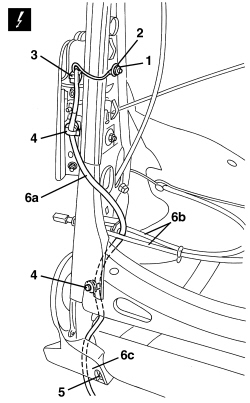
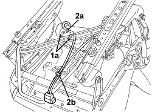
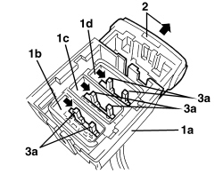

5580C86 SIDE BAG CABLE LOOM (ONE) LH OR RH - R.R OR REPLACE
- Path
- Procedures > 55 ELECTRICAL EQUIPMENT > 5580 SPECIAL ACCESSORIES > 5580C AIR BAG SYSTEM > 5580C86 SIDE BAG CABLE LOOM (ONE) LH OR RH - R.R OR REPLACE
- Kind
- repair procedure (removal / refitting; the operation number is the code)
- Applies to
- all engines; all production periods
- Interactive page
- https://sloeber94.github.io/elrnDB-aBrrSpdr/en/#/946004058
Applies to: all engines; all production periods
 Removing
Removing
 Refitting
RefittingOp. 7045A10 FRONT SEAT (ONE), LEFT OR RIGHT - R.R.
Op. 7045A25 FRONT SEAT BACKREST LUMBAR ADJUSTMENT KNOB (ONE), LEFT OR RIGHT - R.R.
Op. 7045D31 FRONT SEAT BACKREST COVER, LEFT OR RIGHT - R.R. WITH SEAT REMOVED
1. Undo the nut.
2. Disconnect the Air Bag earth terminal.
3. Disconnect the electrical connection for the Air Bag.
Description | Component |
|---|---|
DRIVER'S SIDE BAG | |
PASSENGER SIDE BAG |
4. Release the Air Bag wiring retainers.
5. Undo the bolt for the side trim.
6. Release the Air Bag wiring (6a) from the lumbar control cables (6b) and from the edge (6c) of the side trim.

Applies to: all engines; all production periods
1. Working on the lower side of the seat, disconnect the retainers (1) for the cushion cover.
2. Disconnect the retainer (2a) and the Air Bag wiring retaining band (2b).

Applies to: all engines; all production periods
1. Remove the connector holder (1a) from the connector (1b), (1c), (1d) involved, working as described later on.
2. If inserted, extract the locking slide.
3. Using a screwdriver, move the fastening levers (3a) sideways, in the direction of the arrows.

Applies to: all engines; all production periods
1. Extract the individul connectors (1a) from the connector holder (1b).

Applies to: all engines; all production periods
Refitting
Removing- Check that the wiring is intact and there are no signs of damage.
- If new wiring is being fitted, position the labels as described below.
- Remove the detachable part of the adhesive label from the new wiring. Place a copy of the label in a special folder containing the vehicle details (model, registration date, chassis number) and the serial number of the old backrest cover. The file should be kept for future checks.
- Fit the detachable part of the original label on the lower part of the seat, where similar labels for the seat,Side Bag module and backrest cover can already be found.
- Fit the connector in the connector holder and place the lever in the middle.
- Position the Air Bag wiring.
- Working on the lower side of the seat, connect the retainer and the Air Bag wiring retaining band.
- Connect the cushion cover retainers.
- Attach the Air Bag wiring to the lumbar control cables and to the edge of the side trim.
- Tighten the bolt for the side trim.
- Engage the Air Bag wiring retainers.
- Connect the electrical connection for the Air Bag.
- Connect the Air Bag earth terminal.
- Tighten the nut.
Op. 7045D31 FRONT SEAT BACKREST COVER, LEFT OR RIGHT - R.R. WITH SEAT REMOVED
Op. 7045A25 FRONT SEAT BACKREST LUMBAR ADJUSTMENT KNOB (ONE), LEFT OR RIGHT - R.R.
Op. 7045A10 FRONT SEAT (ONE), LEFT OR RIGHT - R.R.
- After refitting the seat, use an Examiner to check that the system has not acquired errors during the operation.
Topics linked from this page (6)
- 5580C AIR BAG SYSTEM
- 7045A10 FRONT SEAT (ONE), LEFT OR RIGHT - R.R.
- 7045A25 FRONT SEAT BACKREST LUMBAR ADJUSTMENT KNOB (ONE), LEFT OR RIGHT - R.R.
- 7045D31 FRONT SEAT BACKREST COVER, LEFT OR RIGHT - R.R. WITH SEAT REMOVED
- Q030 DRIVER'S SIDE BAG
- Q031 PASSENGER SIDE BAG